HalalTrace — farm-to-fork track and trace on a local-first, AD-defined data model¶
Technical paper, 2026-10-21. Status: design plus a working prototype. All names, certificate numbers and quantities in the screens are invented sample data.
1. Abstract¶
A shopper scans one QR code on a pack of frozen meat. The phone shows whether the pack is halal, which certificate covers it, where it has been, which container carried it, and whether it stayed cold. Veterinary officers, customs officers and halal auditors use the same records to trace a lot backward to the farms and forward to the shops.
The design rests on one premise: each player shares only what the next player needs, namely product types, volume and a certificate reference. Everything else stays in the player's own local ledger, committed by hash and revealed only to an authority that asks. The data model is defined in the ERP Application Dictionary (AD), so any player's app can grow into a spatial ERP with no second model.
This paper states the design, the prior art we could and could not read, the data model, the rules, and the prototype's screens. It is a technical demonstration, not a business plan.
2. The problem¶
Halal assurance today is a chain of paper and logos. A shopper cannot tell a valid certificate from a copied logo. An auditor cannot easily see what else shared a container with halal meat. A veterinary or customs officer who must recall a lot has to ask each party in turn.
What is needed is a record that follows the goods, tells each party only what it must know, and lets an authorised party go further on request.
3. Prior art, and what we actually read¶
| Source | What it shows | How we know |
|---|---|---|
| GS1 New Zealand, 2014 | 109 cartons of halal beef products from a New Zealand plant to Kuala Lumpur over 11 nodes. Carton = serialised GTIN in an RFID tag, container = GIAI, places = GLN, events in EPCIS. Where RFID was impractical, events were typed in. | Read in full |
| Same paper, limits | RFID struggles near moisture and metal; tags fail and must be pre-tested; site networks are unreliable. It recommends adding barcodes, 2-D codes and manual entry "to promote increased and faster user adoption". | Read in full |
| Precision Halalization, Chulalongkorn Halal Science Center with CICOT and HSIT, 2018 | Thai halal certification, forensic lab, a management standard (HAL-Q), raw-material ID (IQRAH) and SPHERE, a digital exchange of halal data. | Abstract only; it does not say whether SPHERE has QR or consumer lookup |
| NTUST thesis (EPCIS halal-meat design) | Conceptual design, untested in a real chain | Search summary only; not read (server refused) |
| Indonesian QR + EPC study | QR label with EPC code as a consumer guarantee | Search summary only; not read |
| HalalChain, Dubai, 2018 | IoT and QR; current status unverified | News report only |
Reading. The identifiers and event standards exist (GS1 GTIN, SSCC, GLN; EPCIS). The one real pilot we read used RFID and recommends cheaper capture. We found no source that joins certificate, veterinary and customs data behind a single scan; that only means two searches found none.
4. Design principles¶
- Each player owns a local ledger. No central database holds everyone's records.
- A hand-off is the only thing shared, as a signed manifest that travels with the goods.
- The manifest carries need-to-know only.
- Private values are committed, not published. Lot, animals and farms appear as salted hashes.
- Trace is federated. An authority asks the next hop; each player answers for its own step.
- QR and barcode capture first. No RFID, no ERP integration required to join.
- The result of every rule is shown. A rule that did not run says so.
5. The hard part: getting a whole chain to cooperate¶
The technology is the smaller problem. A traceable chain is only as strong as its weakest hop, and no party gains much by joining first: a farm gains nothing from a plant that does not scan, and a shop gains nothing from a supplier that does not send a manifest. We found no evidence yet of how willing any Thai party is to take part; a pilot has to measure that, and this paper cannot claim it.
The proposal is to make taking part a reward, not a burden:
- Green lanes. A consignment whose manifest matches what is scanned, and whose certificate checks out, can be treated as lower risk by the authorities that inspect it. Customs and border veterinary officers spend their inspections where data is missing or does not match. Customs services already run risk-based fast-track schemes for trusted operators; whether and how one would apply here is for those departments to decide (⛔ to confirm with them).
- Promotion by the participants. Participating retailers, exporters and the consumer halal movement list and promote products whose chain is traceable. A shopper who scans a pack sees the verified chain, so the promotion is something the shopper can check for themselves.
- Cheaper trouble. A lot that can be located in one query is a smaller recall, a faster release from a hold, and a shorter argument with a buyer.
- No penalty at the start. Non-participants are not blocked. Their packs simply show "no traceable record", and the contrast does the work. Any stronger step is for the authorities and certifying bodies to decide later.
Why this can fail, stated plainly:
- Chicken and egg. The reward appears only when enough parties take part. A pilot should pick one product on one route with willing parties at every hop.
- Free riding. A party can take the promotion and send thin data. Rules R1 to R8 and the audit reveal exist to catch this, and a green lane must be removable.
- Trust in the data. An authority will only relax inspection if it trusts the manifests. That needs signed records, sensor-captured temperatures and audits, and trust takes time to earn.
- Different incentives for authorities. A department's reward is fewer wasted inspections and better recall, not revenue. It will join if the data arrives in a form it can use without new systems.
6. What it takes, party by party¶
Qualitative requirements only. Costs and effort have not been measured.
| Party | Must do | Must provide | Gets in return |
|---|---|---|---|
| Farm | Tag animals; scan the tag at movement | Ear-tag list and movement permit per consignment | A place in a promoted chain; proof of origin |
| Abattoir and packing plant | Print GS1 labels; scan cartons onto pallets and containers; run the dock rules | Manifest per hand-off; certificate reference; lot commitment | Green lane; fewer disputes; faster recall; promotion |
| Halal certifying body | Expose certificate number, scope, plants and dates in a checkable form; agree to vouch for plant signing keys | Certificate registry entry per plant and product | The certificate becomes visible to the shopper; fake logos become checkable |
| Veterinary service | Record inspections as events; place and release holds | Health certificate reference and result | Faster lookup of lots by animal and farm; targeted holds |
| Customs and border control | Compare the declaration with the manifest; release or hold | Clearance reference | Inspection effort moves to mismatches; a basis for green lanes |
| Port and carrier | Scan container arrival; share reefer readings | Arrival, dwell and temperature | Less argument over who caused a delay or excursion |
| Cold store and distribution centre | Scan pallets in and out; share temperature summaries | Pallet scans; readings | Proof the goods were kept cold |
| Retailer | Scan cartons received; show the promotion | Cartons-received event | Shoppers can verify what is on the shelf |
| Consumer halal movement and religious bodies | Recognise the verified chain; promote participating products | Their endorsement and directory | A way to check claims without trusting a logo |
| Standards body (identifier issuer) | Issue company prefixes and location numbers | GLN and prefix register | Wider use of the standard |
| Government commerce and export promotion | Back the green-lane and promotion scheme | Policy and promotion | A visible quality mark for exports |
| Data-protection authority | Review what is shared and what is kept private | A view on the manifest design | A design that shares need-to-know only |
Common to every player: a phone or handheld scanner, a label printer where labels are made, an enrolled signing key, and the local app. No RFID and no integration with the party's own ERP is required to start.
7. Players and parts¶
Eleven parties appear in the chain. Authorities see more than players, but only by asking, and every reveal is logged.
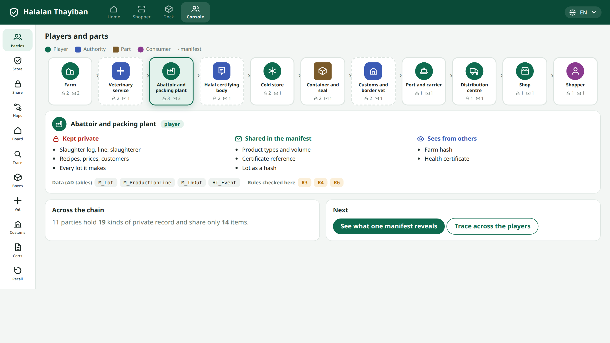
The card for each party shows how many kinds of record it keeps private and how many items it shares. Selecting one lists what it keeps, what it shares, and what it sees:
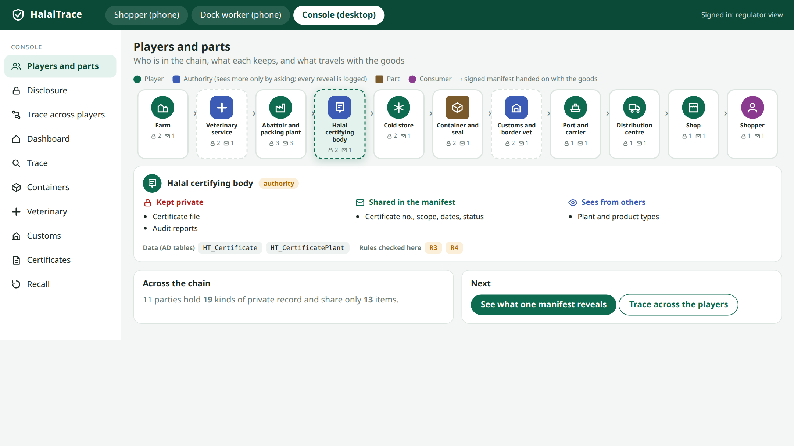
Across the chain the eleven parties hold 19 kinds of private record and share 13 items.
8. Identifiers¶
| Thing | Identifier | Carried by |
|---|---|---|
| Consumer pack | GTIN + lot + serial | QR, as a GS1 Digital Link https://<domain>/01/<GTIN>/10/<LOT>/21/<SERIAL> |
| Carton | GTIN + lot | linear barcode |
| Pallet | SSCC | pallet label |
| Container | ISO 6346 number + seal number | the door and the seal |
| Place | GLN | site register |
| Animal | national ear-tag number | tag |
| Certificate | certificate number | certificate registry |
A plain phone camera opens the link, so the consumer needs no app.
9. The manifest and minimal disclosure¶
At each hand-off the sender signs one manifest. It contains only:
{ "v":1, "container":"MSKU 481236 9", "seal":"HT-0048213",
"lines":[{ "type":"Beef - frozen", "class":"halal", "cartons":240, "kg":2400 }],
"cert":{ "no":"HC-26-001843", "issuer":"Southern Cone Halal Certification Board" },
"lot":"sha256:…", "prev":"sha256:…", "from":"…", "to":"…", "at":"2026-08-29" }
lot is sha256(lot ‖ salt). prev is the hash of the previous manifest, so the manifests form a chain. Prices, customers, recipes, other lots and internal locations never appear.
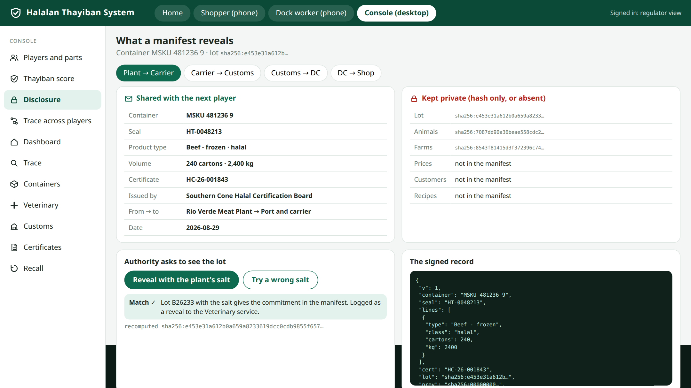
An authority that needs the lot asks the owner, who reveals the salt. The recomputed hash either matches the manifest or it does not; a wrong salt discloses nothing.
10. Federated trace¶
A trace walks the chain by asking each hop for its own step. In the prototype, six hops answer from the shop back to the farms. If one player is silent, the trace stops there and nothing beyond it is guessed.
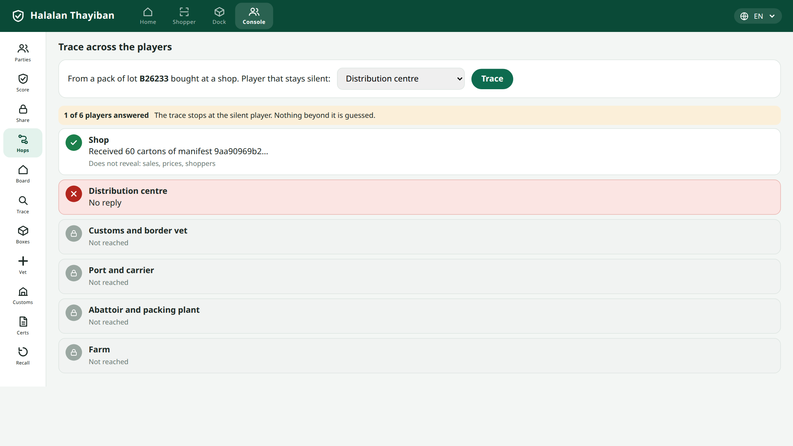
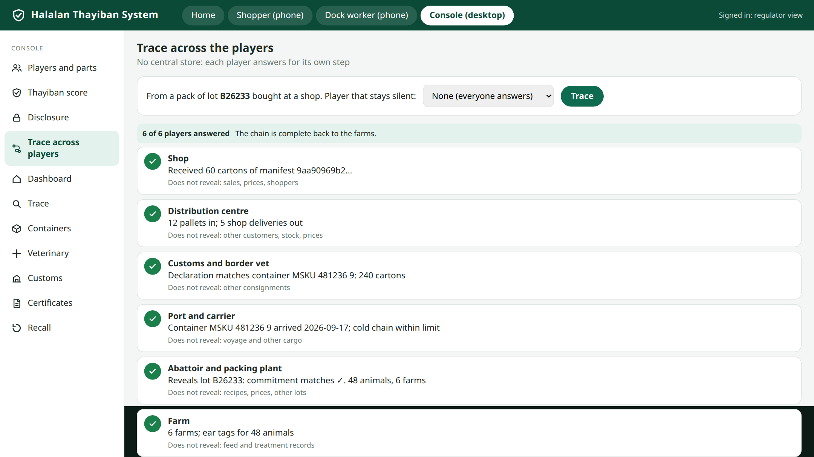
11. Data model in the AD¶
Every table is defined in AD_Table and AD_Column, so it opens in the generic window with no per-window code. Core tables below were checked in the ERP's AD seed.
| Concept | AD table | Columns used |
|---|---|---|
| Player, site | C_BPartner, C_BPartner_Location |
— |
| Product type | M_Product |
— |
| Lot, serial, best-before | M_Lot, M_AttributeSetInstance |
Lot, SerNo, GuaranteeDate |
| A hand-off | M_InOut, M_InOutLine |
the manifest derives from these lines |
| Carton, pallet, container | M_Package, M_PackageLine |
TrackingNo, Weight, Qty, M_Product_ID |
| Cold-store room, dock, rack | M_Warehouse, M_Locator |
X, Y, Z |
| Internal move, count | M_Movement, M_Inventory |
— |
| Carcass to cuts to packs | M_ProductionLine |
— |
Extension tables, also AD-defined: HT_Certificate, HT_CertificatePlant, HT_Event (EPCIS-shaped), HT_Reading (sensor values), HT_Hold, HT_Manifest, HT_Commitment, HT_Reveal, HT_Scan, HT_Review, HT_Rule.
Spatial hook. M_Locator.X/Y/Z places a pallet in a cold-store room, and HT_Event places an event at a site by GLN. A spatial ERP draws the room from the same rows. A plant that runs the app already holds its stock, locations and shipments, so track and trace is a view of data it keeps anyway.
12. The rules¶
| Rule | Checks | If it fails |
|---|---|---|
| R1 | every item loaded in a container has a valid certificate for its class | the dock scan is blocked and logged |
| R2 | a halal container's listing is halal only | the container cannot be sealed |
| R3 | the certificate covers this plant and product | pack shows "not verified" |
| R4 | the certificate was valid on the production date | pack shows "not verified" |
| R5 | a container that last carried non-halal cargo has a cleaning record | seal refused |
| R6 | a named, certified slaughterer was on that line and date | lot cannot be created |
| R7 | cold-chain readings stay within the limit | the excursion is shown and the lot flagged |
| R8 | a veterinary or customs hold stops downstream use | pack shows "on hold" |
13. The shopper's phone¶
Scan. The camera reads the pack's QR code.
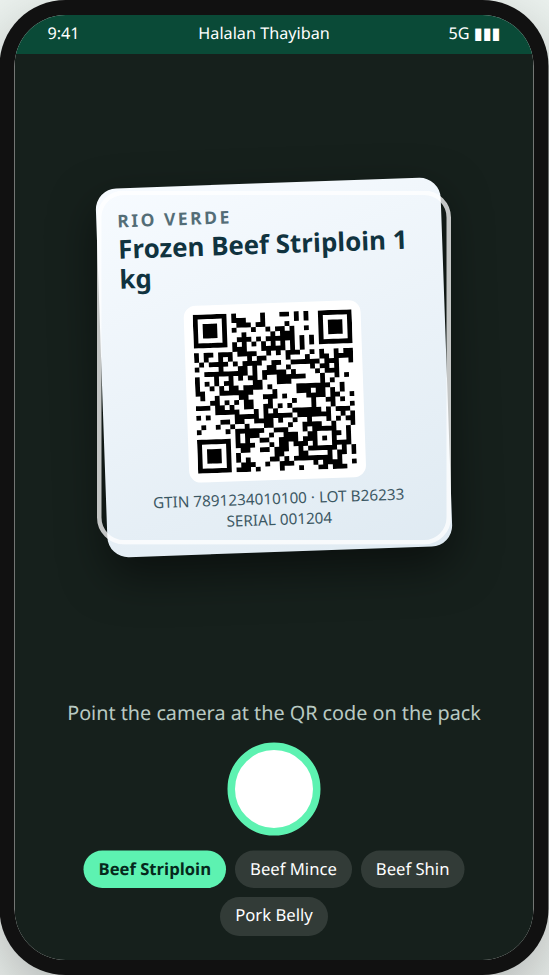
Verdict. The page states the verdict, the certificate, the issuer, the validity dates and the plant. The phone checks the signature itself.
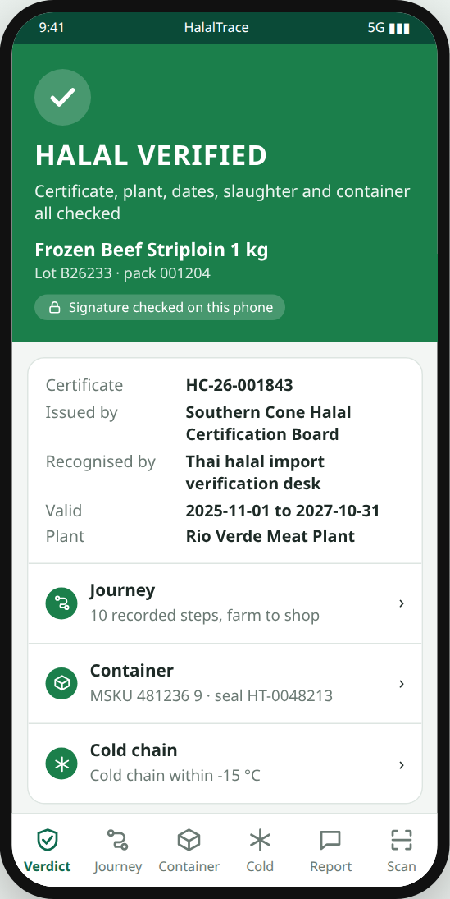
Tracking card. Like a parcel tracker: the status and a six-step bar at the top, then a scrollable list, newest first, of every handling step. Tapping a step shows who handled it and the evidence.
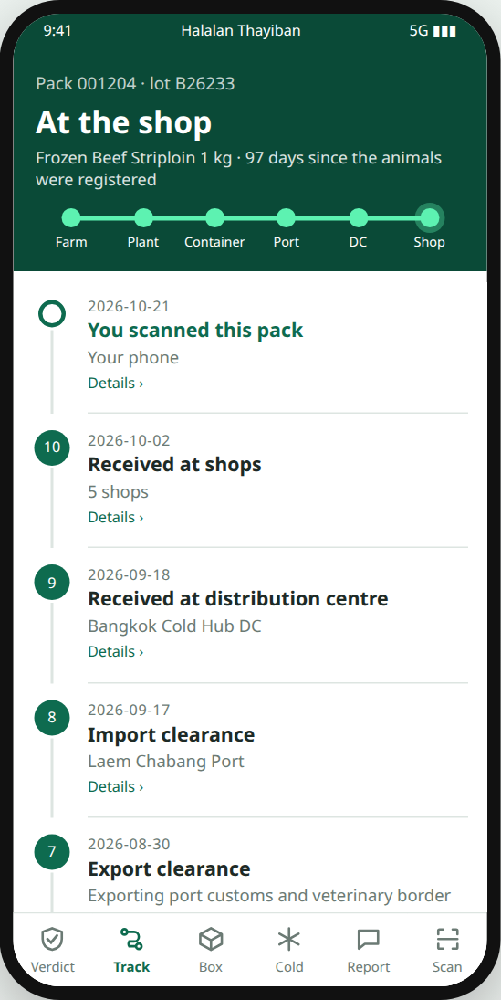
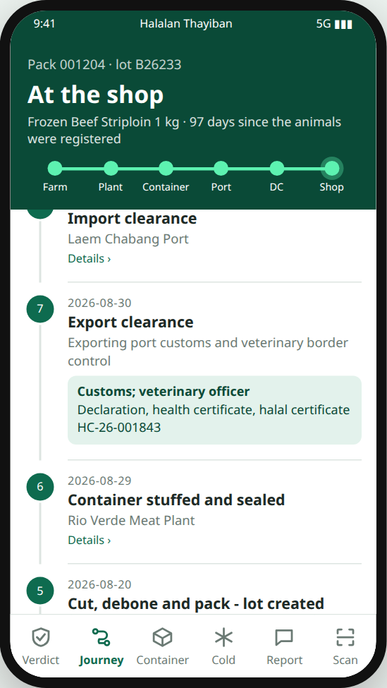
Container and cold chain. The container number, seal, previous cargo and cleaning record, the content listing with each line's certificate, and a temperature chart for each leg against the limit.
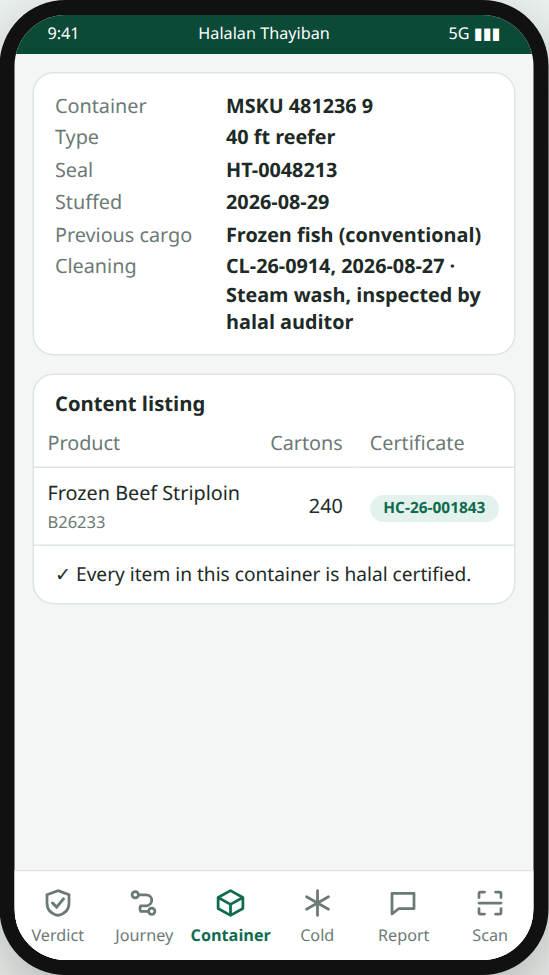
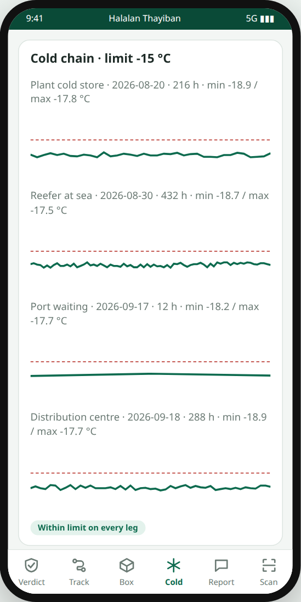
Report or review, with a photo. The shopper photographs the pack, rates it, picks a type and the shop, and writes a note. The message carries the pack link and the verdict shown at scan time. It is sent through the phone's own share sheet (WhatsApp, LINE, email or any installed app), with mailto: and wa.me links as fallbacks, or saved. The report is stored on the phone first and works offline. HalalTrace sees nothing unless the shopper sends it there. The status stops at "Shared", because a share sheet cannot tell us more.
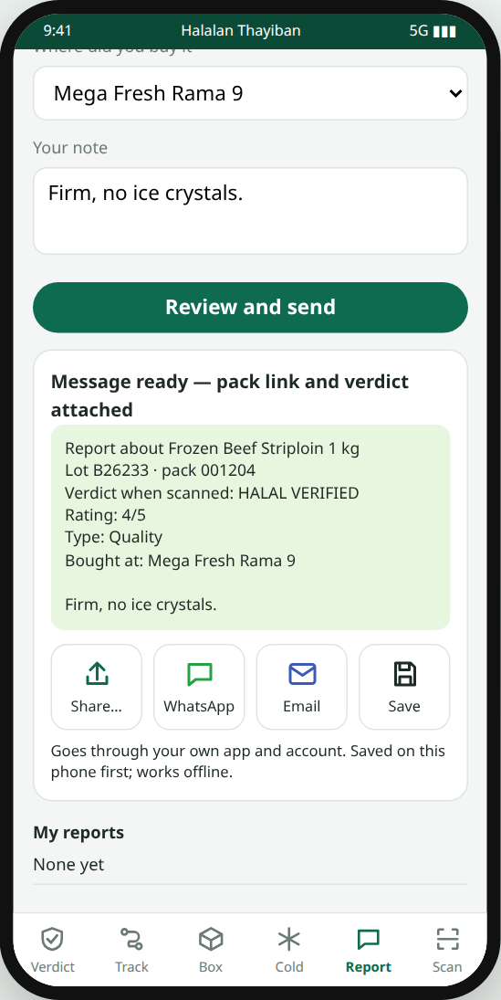
14. The dock worker's phone¶
Each carton is scanned onto the container. Rule R1 checks it on the spot.
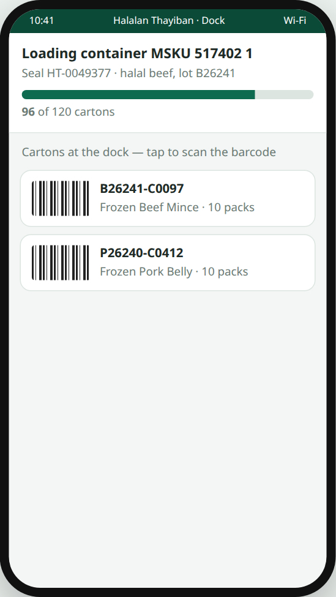
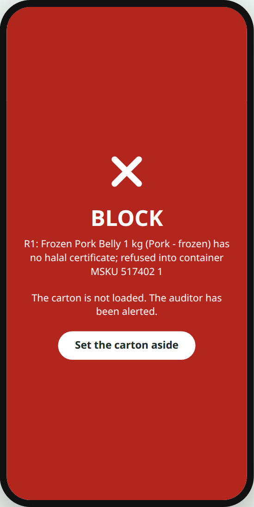
15. The console¶
The plant's own app and the authority views share the generic grid. The dashboard shows alerts, including the blocked scan above.
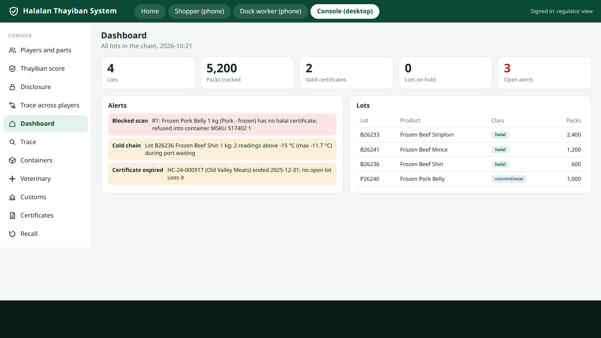
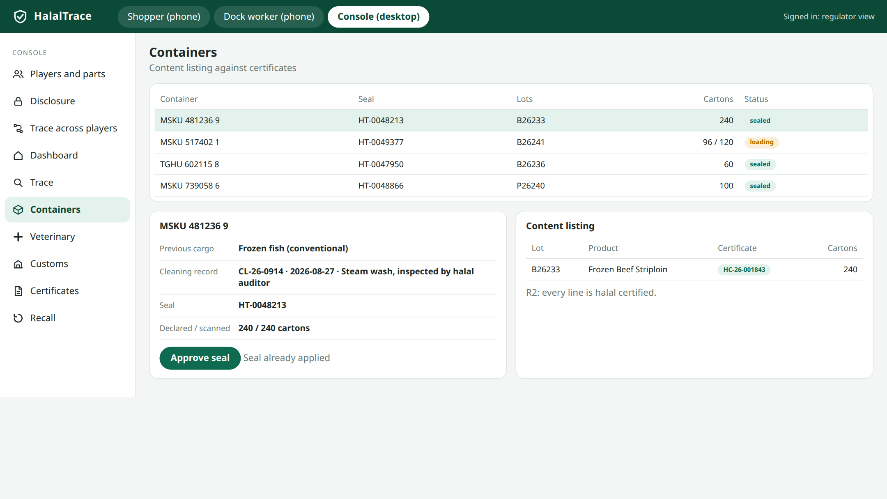
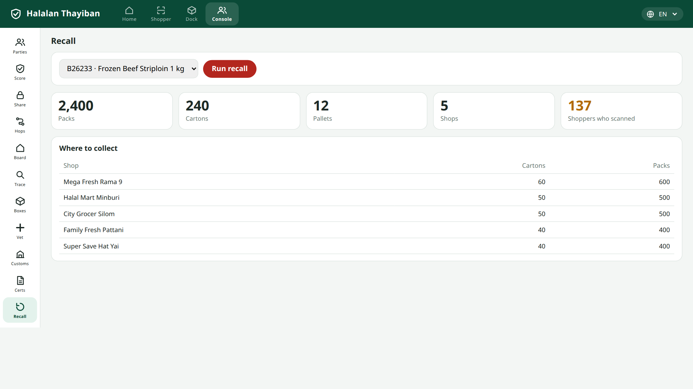
16. Local-first mechanics¶
The signed, hash-chained, sealed-to-recipient event pattern is reused from our ThaiGoldPawn prototype: append-only events, device-bound keys that cannot be exported, tokens sealed to the recipient's key, state as a fold over the chain, and an offline queue that syncs on reconnect. Here the author is the player key, the recipient is the next player's key, and the token is the manifest.
17. What the checks prove¶
Twenty-three scripted checks run against the prototype. All passed on 2026-10-21; the log is witness_ui.log.
| Check | Issue it proves or disproves |
|---|---|
| W-HT-MIN | the manifest has only the agreed fields; lot, animals, farms, price, customer are absent in clear |
| W-HT-COMMIT | the right salt reproduces the commitment; a wrong salt fails |
| W-HT-CHAIN | each manifest's prev equals the previous manifest's hash |
| W-HT-FED | a silent player stops the trace; later hops are "not reached" |
| W-HT-AGG | 2,400 packs trace to 48 animals on 6 farms and add up |
| W-HT-R1 | a pork carton is refused; a beef carton is loaded |
| W-HT-TRACK | the tracking card has 11 steps, six stages, and scrolls |
| W-HT-REV | a review is saved locally with its photo, rating, link and verdict |
| W-HT-PLAYERS | 11 players fit the window |
| W-HT-NOOVERFLOW, W-HT-NOERR | no console view scrolls sideways; no page errors |
These prove the prototype is consistent with the design. They do not prove the design works in a real chain.
18. Limits and open questions¶
- No real integration. Certificate lookup against a Thai certifying body's registry is assumed. Whether such a registry can be queried by number is unknown.
- Key trust. Who vouches that a signing key belongs to a plant is open; a certifying body could, if it agrees.
- Multi-hop trace needs each player online or its answers cached. The cache rule is undefined.
- Cold-chain data is trustworthy only if sensors capture it; typed values would be labelled lower trust.
- Hosting of the public record for a plant with no web presence.
- Thai text for religious wording must be reviewed by a qualified native speaker before consumer use.
- Unread sources: the NTUST thesis and the Indonesian study.
- No field trial. The only comparable pilot we read used RFID over 109 cartons.